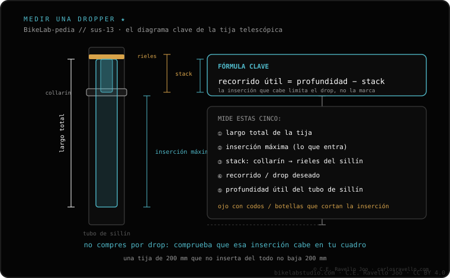

El recorrido útil de una dropper NO es el número de la caja: lo deciden la inserción (lo que la tija debe meterse en el cuadro) y el stack (lo que ocupa entre el collarín y los raíles del sillín, altura muerta). Mide la profundidad útil del tubo de sillín (hasta que choca con recodo, pivote o portabidón) y tu altura de sillín: el recorrido que cabe es el mayor que respete la inserción mínima de la tija y que stack + recorrido ≤ tu altura de sillín. Es la medición que cierra qué dropper te entra.
Si solo mides el diámetro, te falta lo importante. Esta es la cuenta que evita comprar una tija que queda alta.
Inserción. Cada dropper pide una longitud mínima dentro del tubo de sillín. Para saber cuánta cabe, mete una cinta o una varilla en el tubo hasta que tope con un recodo, el pivote del basculante o la tuerca del portabidón: esa es tu profundidad útil. Si es menor que la inserción mínima de la tija, no entra.
Stack. Es la altura entre el collarín del cuadro y los raíles del sillín con la tija arriba. Es altura que "gastas" sin que sea recorrido. Dos droppers del mismo recorrido pero distinto stack rinden distinto: el de menor stack te deja subir más el sillín o meter más recorrido.
Junta las dos: el recorrido máximo que te entra es el mayor que cumpla a la vez (a) que la inserción mínima de esa tija quepa en tu profundidad útil, y (b) que stack + recorrido no supere tu altura de sillín (de lo contrario, bajada del todo, te queda alta para pedalear). Con esas dos comprobaciones aciertas.

Dinos tu altura de sillín y el modelo del cuadro y te calculamos el recorrido máximo que te entra. Escríbenos por WhatsApp
La longitud de la tija que debe entrar en el tubo de sillín. Si el tubo es corto o tiene recodo, esa inserción no cabe.
La altura muerta entre el collarín y los raíles del sillín; no es recorrido. Menos stack = más recorrido en la misma bici.
El mayor que respete la inserción mínima y que stack + recorrido no supere tu altura de sillín.
© 2026 BikeLab Studio. Contenido bajo CC BY 4.0: puedes copiarlo, traducirlo y publicarlo, incluso con fines comerciales. La cita es obligatoria. Sin atribución, la licencia se revoca de forma automática (CC BY 4.0, §6.a) y el uso pasa a ser una infracción de derechos de autor: solicitamos la retirada del contenido y su desindexación. · Diseño y propiedad: Carlos Ravello Joo